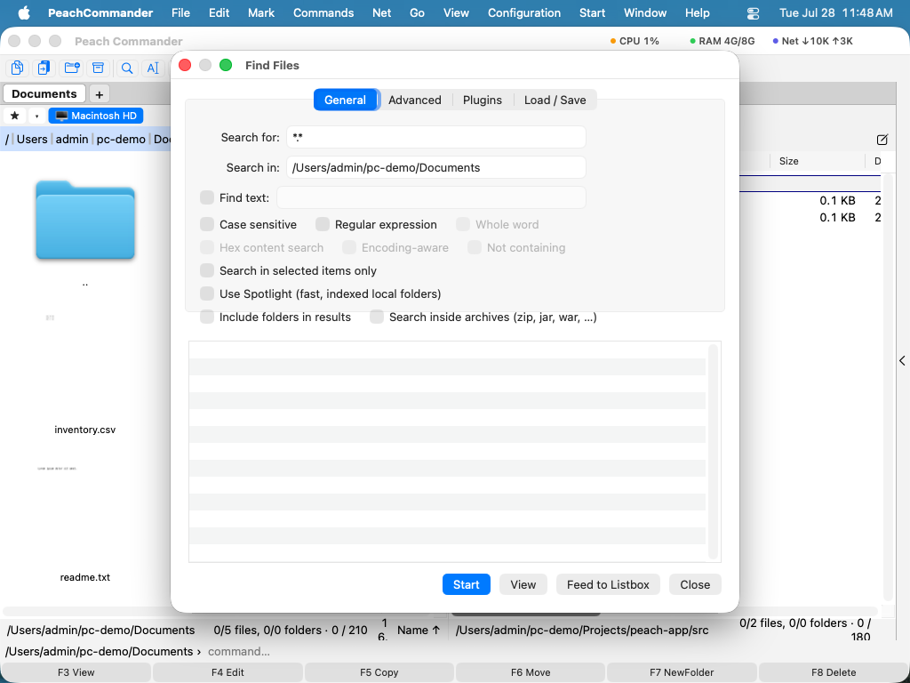

查找文件
当你需要在 Mac 上任何位置找出文件时 —— 按名称、按内容，或按大小和日期 —— 使用“查找文件”窗口。它可搜索一个或多个文件夹（及其子文件夹），能查看文本文件和压缩包内部，并让你把找到的一切直接送入面板，从而像操作普通文件夹一样处理结果。
按名称查找文件
- 在显示要搜索文件夹的面板中，选择 命令 > 查找文件…（或按 Cmd+Shift+F）。
- 在 常规 标签页的 搜索 中键入名称模式。可使用
*.pdf或report_*.docx这样的通配符。要一次搜索多个文件夹，在起始文件夹字段中用分号（;）分隔列出它们。 - 点按 开始。匹配项在找到时出现在下方的结果列表中。
- 双击任意结果以在活动面板中跳到该文件，或选择一个结果并点按 查看（F3）在内置查看器中打开它。

(图：常规标签页 —— 在一个或多个文件夹中按名称模式搜索。)按内容、大小和日期搜索
- 要在文件内部搜索，在 常规 标签页的 查找文本 中键入文本——字段里有什么就搜索什么，留空则只按名称搜索。选项可让其 区分大小写、只匹配 完整单词、将文本视为 正则表达式、执行 十六进制内容搜索，或查找 不包含 该文本的文件。
- 切换到 高级 标签页，按 大小（例如
10K到5M）、按 修改日期 范围，或按最近 N 天内更改的文件来缩小结果。 - 打开 在压缩包内搜索，以查看 zip 系列压缩包（zip、jar、war 等）内部。
- 要将搜索限制为你已选中的内容，在开始前打开 仅在所选项目中搜索。
- 打开同时搜索文件注释，文本便会在每个文件的内容之外，也在其注释中查找。当文件里根本没有相关字句时，这就是凭你为它写下的话把它找回来的办法 —— “客户的原件”“已被 2026 年的导出取代”。这样找到的结果显示注释而不是文件中的某一行，也不显示行号，因为命中之处并不在文件的文本里。区分大小写、全字匹配和正则表达式对注释与对内容一样有效；十六进制搜索则不适用，因为注释是有人键入的文本。不包含依旧自相一致：只有内容和注释里都没有该文本时，文件才会列出。若已启用“笔记”插件，其笔记会作为内容字段提供，你可以在 Plugins 下对它设置条件 —— 参见使用插件。
- 有些插件能把文件变成文件本身并不包含的文本——反编译器插件把
.class变成 Java 源代码。打开 搜索插件提供的文本，这类文件就按那份文本搜索，而不是按自己的字节，于是源代码里的一句话能在编译后的类里找到。只有装了这类插件时才会出现这个选项，而且更慢：生成文本可能意味着每个文件跑一次反编译器。
 (图：高级标签页 —— 按大小、日期和其他属性筛选。)
(图：高级标签页 —— 按大小、日期和其他属性筛选。)
如果你有添加内容字段（例如图像尺寸）的插件，插件 标签页可让你要求某字段满足某条件 —— 例如只找宽度大于 1000 像素的图像。
 (图：插件标签页 —— 按插件提供的内容字段匹配。)
(图：插件标签页 —— 按插件提供的内容字段匹配。)
用 Spotlight 快速搜索
对于 macOS 已建立索引的本地文件夹，在常规标签页打开 使用 Spotlight 以获得近乎即时的结果。Spotlight 搜索索引而非扫描文件，因此它会忽略正则表达式、子文件夹深度限制以及仅所选范围。
复用并交接结果
- 送入列表框 会把每个结果作为临时列表放入活动面板，以便你一次复制、移动或删除整组。
- 在 载入 / 保存 标签页，选择 另存为模板… 以存储当前搜索（模式和选项），稍后从模板列表中再次选取。
- 搜索 和 查找文本 各自记住最近使用的 20 个条目，最近使用的排在最前——点按字段末尾的箭头即可再次选取。同一个条目再次使用时会回到最前，而不是出现两次；关闭窗口以至退出 App 后列表依然保留。载入 / 保存 标签页上的 清除历史记录… 会忘记这两个列表；已存储的模板不受影响。
快捷键
| 操作 | 快捷键 |
|---|---|
| 打开“查找文件” | Cmd+Shift+F 或 Option+F7 |
| 开始 / 停止搜索 | 窗口中的“开始”按钮 |
| 查看所选结果 | F3 |
备注
- 内容搜索会读取本地文件夹的整个文件；在其他位置会跳过非常大的文件（约 16 MB，使用正则表达式时约 64 MB）。
- 在压缩包内搜索会下探至多四层嵌套压缩包。
- 结果中包含文件夹 也会列出名称匹配的文件夹，而不仅是文件。
- Spotlight 仅覆盖已建立索引的本地文件夹；对于网络位置或基于模式的匹配，请将其关闭，让“查找文件”进行扫描。